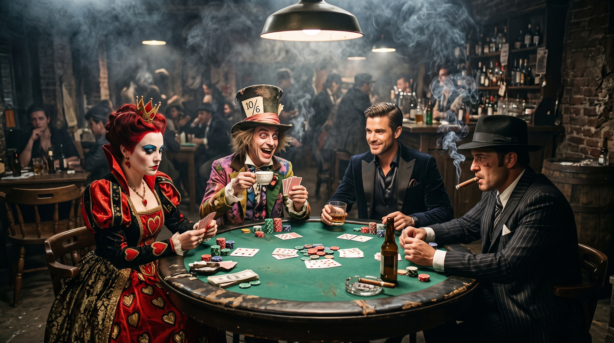
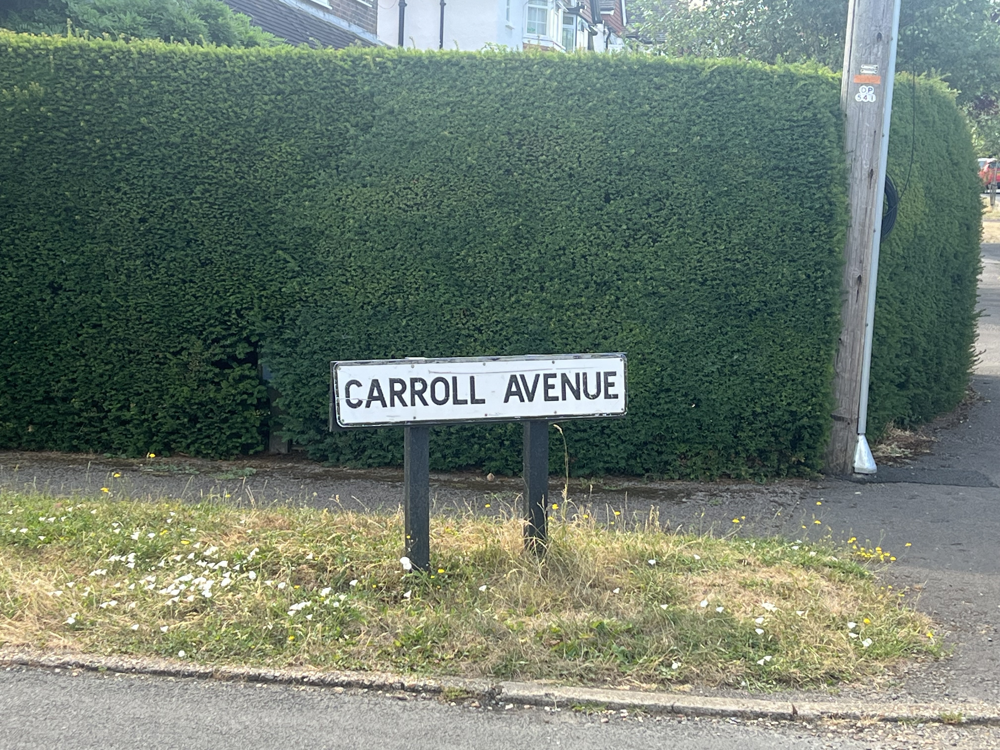
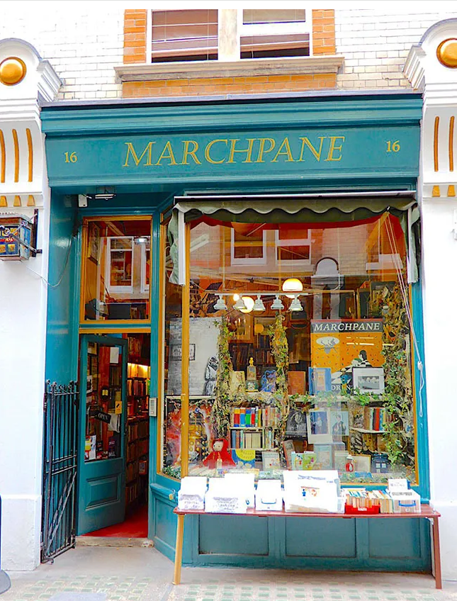
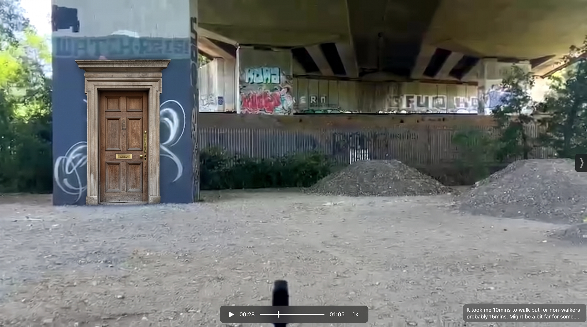
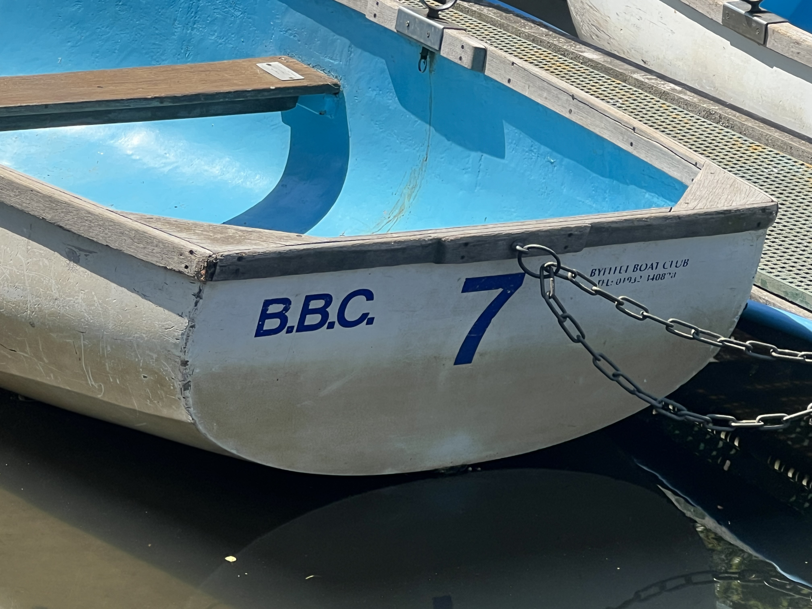
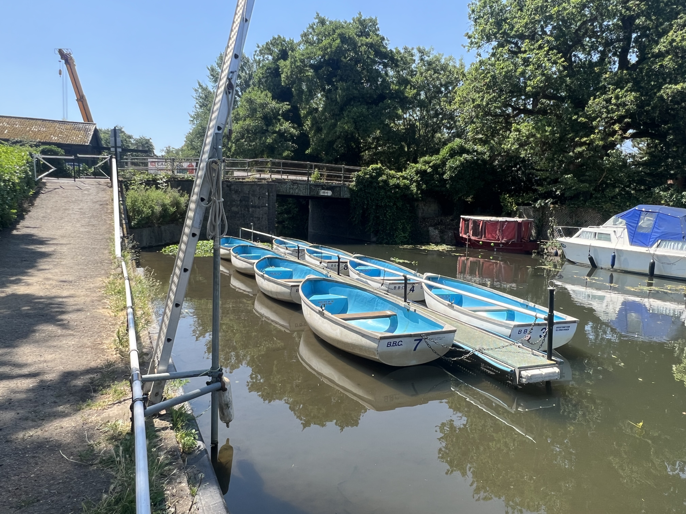
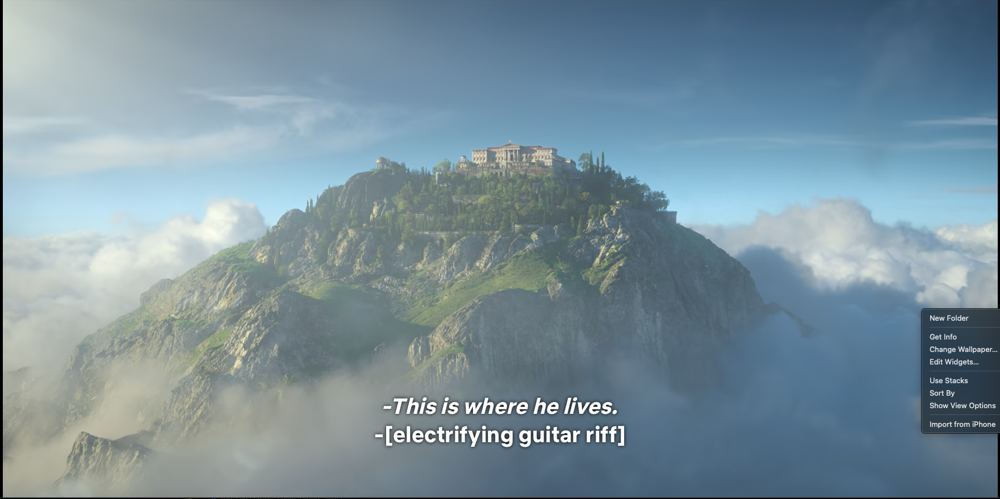
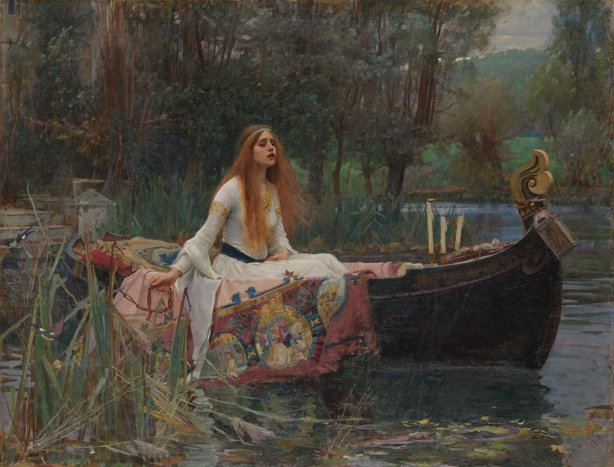
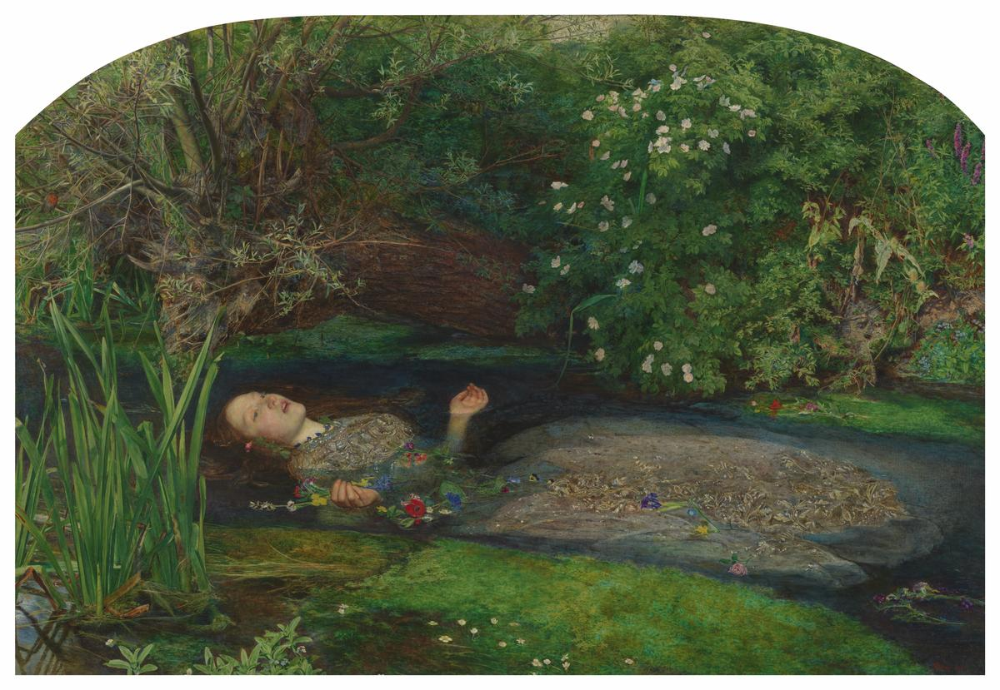

I probably need to merge this video (or one like it) with one of the earlier ones to get our hero into the "gambling den". The man will be replaced by one of us - probably younger person - David, or Matthew etc - probably best approach is have AI do a hoodie man and our hero wears a hoodie too
As you can see on my 10th attempt of getting AI to do what I wanted it still changed the pillar right at the last minute. Damn!
But version 11 has worked more or less - slight glitch at the beginning but nothing I can do about that
Trying various experiments with light setting (sorry about no good Mic) it appears the film will need LIGHTS as the area under the motorway is either too dark or the blue sky goes white - see various attempts enclosed. It does sort of work with iphone default settings but you again dont get the blue sky - its white
How the site looks like using iphone default settings
I was thinking it would be nice to start the scene from the top of the futurist motorway then zoom down to the quiet disused path below
This prototype scene shows how William might die/collapse (using support of a table so does not hurt himself) and the mad doctor. It sort of works
A swan trying to cool itself down : B ROLL
The Gamblers: Queen of Hearts, the Mad Hatter, the playboy and the gangster

William Lives in Carroll Avenue

Alternative beginning: Have the hero buy an antique verion of Lewis Carroll's: "Alice Through the Looking Glass" before he collapses in garden

I was thinking of an AI generated door that opens - the room inside is full of light... William walks inside. Once inside the door closes behind him. Scene fades. The next scene starts in the gambling den.

The hire boats have BBC stamped at the back which might be a problem

They have 8 hire boats - each can carry 5 people

If you would like to see a video of Greek Gods in a modern context KAOS on Netflix is excellent

Ophilia and the Lady of Shallot both have the vibe Jon is looking for and are vaguely associated with Guildfords watts gallery

